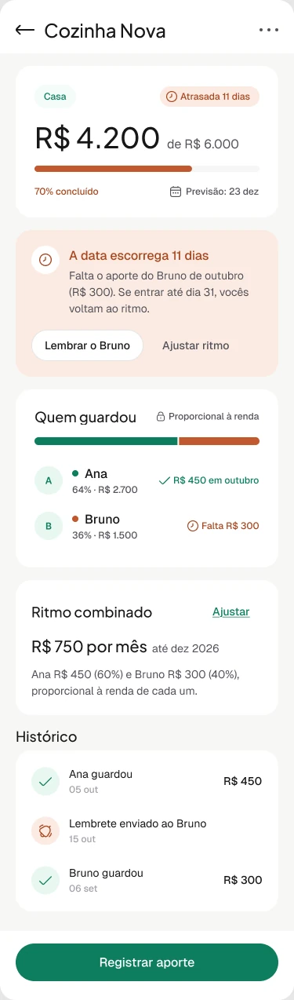
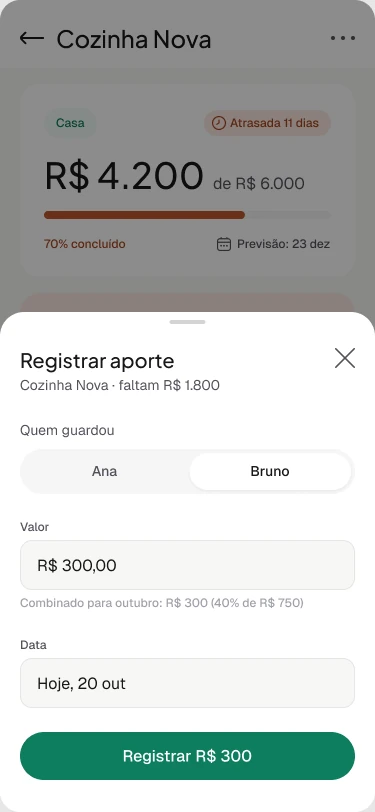
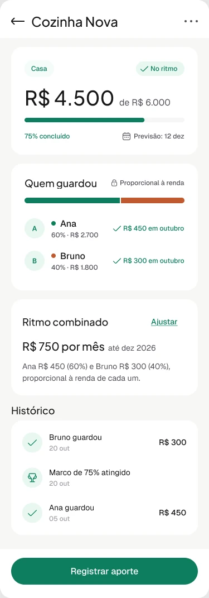
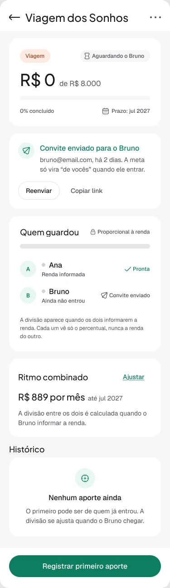
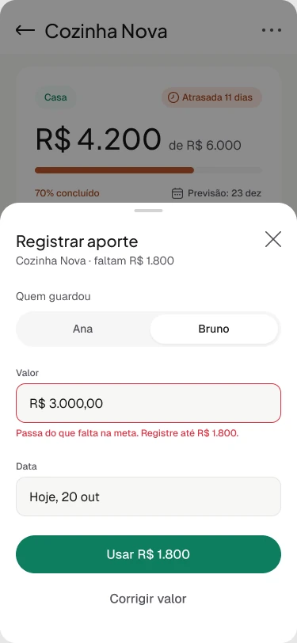
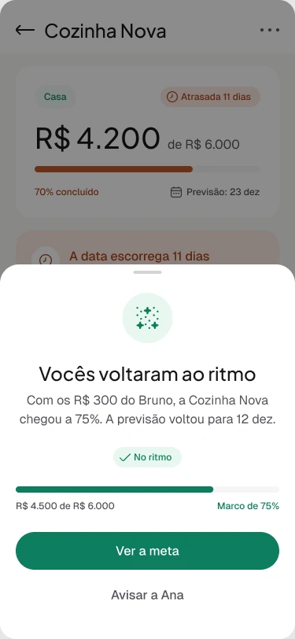

Produto próprio · App mobile
nosso+ app
Ritmo a dois: o que o app faz quando um dos dois atrasa a parte dele da meta.
- Papel
- Product design: fluxo, estados, UI e copy
- Ferramentas
- Figma (auto layout, componentes e variantes), Claude
- Escopo
- Um fluxo, seis telas, três estados de meta
- Status
- Conceito no Figma, ainda sem teste com usuários



Contexto
A landing do nosso+ promete que o casal vai alcançar as metas "os dois no mesmo ritmo". A primeira versão das telas mobile mostrava o caminho feliz: metas, progresso, contas do mês. Bonito, mas não respondia a pergunta que decide se o produto funciona na vida real.
Uma meta a dois tem um jeito de dar errado que uma meta individual não tem: um faz a parte dele e o outro não. Num app de finanças pessoais, isso é só um número atrasado. Num casal, é uma conversa delicada. Se o app errar o tom, ele vira o fiscal da relação, e ninguém volta a abrir um app que gera briga.
Por isso a v2 não é uma galeria de telas. É uma história em seis telas sobre esse momento.
O fluxo em seis telas
Ana e Bruno, o mesmo casal da landing, têm duas metas. A Viagem dos Sonhos acabou de nascer e o Bruno ainda não entrou no app. A Cozinha Nova já está andando, mas em outubro o aporte do Bruno não veio. O fluxo acompanha o casal do convite até a meta voltar ao ritmo.
-

1. A meta nasce. O Bruno ainda não entrou.
-
2. Um mês depois. O ritmo escorrega.
-
3. O Bruno registra. O valor combinado já vem sugerido.
-

4. Erro. O valor passa do que falta.
-

5. Sucesso. A previsão volta para a data.
-
6. De volta ao ritmo. O marco entra no histórico.
Decisão 1
A meta existe antes do parceiro
Um app de casal tem um problema de partida: quase sempre só um dos dois chega primeiro. Se a meta só puder ser criada com os dois dentro, quem chegou primeiro desiste esperando.
Então a meta nasce com uma pessoa só, e a tela assume isso em vez de esconder. O selo diz "Aguardando o Bruno", o convite fica visível com as ações de reenviar e copiar link, e a copy explica o porquê: a meta só vira "de vocês" quando ele entrar. O ritmo de R$ 889 por mês já aparece (R$ 8.000 em nove meses, até julho de 2027), mas a divisão entre os dois fica em espera até o Bruno informar a renda.
O histórico vazio também não é um vazio. O empty state diz o que pode acontecer agora ("o primeiro pode ser de quem já entrou") e o botão principal muda para "Registrar primeiro aporte".
Decisão 2
Proporcional, sem expor a renda
Dividir meio a meio é justo só quando os dois ganham parecido. O padrão do nosso+ é dividir proporcional à renda: na Cozinha Nova, Ana entra com R$ 450 (60%) e Bruno com R$ 300 (40%) dos R$ 750 do mês.
Só que proporcional à renda exige saber a renda, e salário é um assunto que muitos casais não abrem nem entre si. A regra que escrevi direto na interface resolve isso: "cada um vê só o percentual, nunca a renda do outro". O cadeado ao lado de "Proporcional à renda" é o lembrete visual dessa promessa em todas as telas.
Decisão 3
Atraso é uma data, não uma dívida
A forma mais óbvia de mostrar o atraso seria "Bruno deve R$ 300". Escolhi falar da consequência para os dois, e não da culpa de um. O título do aviso é "A data escorrega 11 dias", e o selo no topo diz "Atrasada 11 dias". O valor que falta aparece, mas como informação ("Falta R$ 300"), junto com o que resolve: se entrar até o dia 31, vocês voltam ao ritmo.
O aviso oferece duas saídas, porque atraso tem duas causas. "Lembrar o Bruno" é para quando foi esquecimento: o app faz a cobrança, e a Ana não precisa. "Ajustar ritmo" é para quando o combinado não cabe mais no mês e precisa ser renegociado.
A cor muda para laranja no selo, na barra e no aviso, mas nunca sozinha: todo estado também tem ícone e texto, para quem não distingue as cores.
Decisão 4
Um erro que já traz a correção
O registro de aporte abre como bottom sheet sobre a meta, sem tirar o casal do contexto. No estado padrão, o Bruno aparece selecionado e o campo traz a referência do combinado logo abaixo: "Combinado para outubro: R$ 300 (40% de R$ 750)". Ninguém precisa lembrar quanto era a sua parte.
No erro, o Bruno digita R$ 3.000, mais do que os R$ 1.800 que faltam para a meta. Em vez de só pintar o campo de vermelho, a mensagem diz o limite ("Registre até R$ 1.800") e o botão principal vira a própria correção: "Usar R$ 1.800". "Corrigir valor" fica como segunda opção, para quem digitou um zero a mais.
Decisão 5
O sucesso fecha o ciclo com o outro
A confirmação não diz "Aporte registrado". Diz o que mudou para o casal: "Vocês voltaram ao ritmo". Com os R$ 300 do Bruno, a Cozinha Nova chega a 75% e a previsão volta para 12 de dezembro.
A ação secundária é "Avisar a Ana". O fluxo começou com a Ana sozinha esperando o aporte do Bruno, e termina com o Bruno podendo contar para ela. Na tela da meta, o marco de 75% entra no histórico ao lado dos aportes, para que a conquista fique registrada, e não só o dinheiro.
Um protótipo que fecha a conta
Em produto financeiro, número inconsistente em protótipo vira desconfiança no teste. Por isso os dados das seis telas são uma única história que fecha de ponta a ponta, e qualquer pessoa pode refazer a conta.
-
Progresso
R$ 4.200 + R$ 300 do Bruno = R$ 4.500, que são 75% de R$ 6.000. É o marco que aparece no sucesso e no histórico.
-
Quem guardou
Bruno vai de R$ 1.500 para R$ 1.800. Com a Ana em R$ 2.700, o total dá R$ 4.500 e a proporção volta a 60% e 40%, a mesma do ritmo combinado.
-
Ritmo
R$ 750 por mês = R$ 450 da Ana + R$ 300 do Bruno. Na meta nova, R$ 8.000 em nove meses dão os R$ 889 por mês da tela de convite.
-
Limite do erro
R$ 6.000 − R$ 4.200 = R$ 1.800, o teto que a mensagem de erro sugere.
Componentes
As seis telas são montadas com as mesmas peças, todas em auto layout e ligadas às variáveis do design system do nosso+ (cor, espaçamento, raio e tipografia). O PaceBadge carrega o estado da meta (aguardando, atrasada, no ritmo) com ícone, texto e cor juntos. O ContributionSplit mostra quem guardou quanto e se adapta ao convite pendente. Os avisos e o bottom sheet repetem a mesma estrutura de ícone, mensagem e ações em todos os estados.
Na prática, desenhar um estado novo, como uma meta concluída, é trocar variantes e copy, não redesenhar a tela.
O que ainda é hipótese
Este fluxo ainda não passou por teste com casais. As decisões acima são escolhas de design com um raciocínio por trás, não resultados. É isto que eu validaria primeiro, e como.
-
Data em vez de dívida
Hipótese: falar do atraso como data que escorrega gera menos atrito do que mostrar quanto um deve. Como testar: teste moderado com cinco ou seis casais, comparando as duas versões do aviso, e observando a reação de quem está atrasado.
-
O app como mensageiro
Hipótese: o casal prefere que o app faça o lembrete a cobrar diretamente. Como medir em produção: quanto tempo leva entre o lembrete e o aporte, e quantas metas atrasadas voltam ao ritmo depois dele.
-
Renda escondida
Hipótese: mostrar só o percentual faz mais gente informar a renda e aceitar a divisão proporcional. Como testar: entrevistas sobre como o casal divide as contas hoje, antes de qualquer tela.
-
Meta antes do convite
Hipótese: deixar uma pessoa criar a meta sozinha aumenta a ativação sem esvaziar a ideia de "a dois". Como medir: taxa de aceite do convite e tempo até o primeiro aporte do segundo parceiro.
Próximos passos
O que fica de fora desta versão do fluxo.
-
O lado do Bruno
O fluxo mostra o lembrete saindo, mas não o que o Bruno recebe. A notificação é o ponto mais sensível de todo o tom do produto e merece o próprio estudo.
-
Ajustar ritmo
A segunda saída do atraso: renegociar o valor ou a data, com a aprovação dos dois antes de valer.
-
Do Figma ao código
Levar o fluxo para o mesmo código da landing e do dashboard, como PWA instalável, reaproveitando os tokens que já existem nos dois lados.
Contato
Gostou do que viu? Vamos conversar.